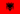
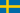
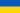

| Albania |
Festivali i kenges 61 |
22/12/2022 |
Albina & familja Kelmendi-Duje |
| Alemania |
Unser Lied fur Liverpool |
03/03/2023 |
Lord of the lost-Blood and glitter |
| Belgica |
Eurosong 2023 |
14/01/2023 |
Gustaph-Because of you |
| Republica Checa |
ESCZ 2023 |
07/02/2023 |
Vesna-My sister´s crown |
| Croacia |
Dora 2023 |
11/02/2023 |
Let3-MamaSC |
| Dinamarca |
Dansk melodi grand prix 2023 |
11/02/2023 |
Reiley-Breaking my heart |
 España España |
Benidorm fest 2023 |
04/02/2023 |
Blanca Paloma-Eaea |
| Estonia |
Eesti laul 2023 |
25/02/2023 |
Alika-Bridges |
| Finlandia |
Uuden Musikiin Kilpailu 2023(UMK) |
25/02/2023 |
Kaarija-Cha cha cha |
| Irlanda |
The late late show:eurosong 2023 |
03/02/2023 |
Wild Youth-We are one |
| Islandia |
Songvakeppnin 2023 |
04/03/2023 |
Dilja-Power |
 Italia Italia |
San remo 2023 |
11/02/2023 |
Marco Mengoni-Due vite |
| Letonia |
Supernova 2023 |
11/02/2023 |
Sudden Lights-aija |
| Lituania |
Pabadom is naujo 2023 |
18/02/2023 |
Monika Linkyte-Stay |
| Malta |
Malta eurovision song contest 2023 (MESC) |
11/02/2023 |
The busker-Dance(our own party) |
| Moldavia |
Etapa nationala 2023 |
04/03/2023 |
Pasha Parfeni-Soarele si luna |
| Noruega |
Melodi grand prix 2023 |
04/02/2023 |
Alessandra-Queen of kings |
| Polonia |
tu bije serce europy! Wybieramy hit na eurowizje 2023 |
26/02/2023 |
Blanka-solo |
| Portugal |
Festival da cançao 2023 |
11/03/2023 |
Mimicat-Ai coraçao |
| Rumania |
Selectia nationala 2023 |
11/02/2023 |
Theodor-DGT |
| San Marino |
una voce per san marino |
25/02/2023 |
Piqued Jacks-Like an animal |
| Serbia |
pesma za evroviziju 2023 |
04/03/2023 |
Luke Black-Samo mi se spava |
| Suecia |
melodifestivalen 2023 |
11/03/2023 |
Loreen-Tattoo |
| Ucrania |
vidbir 2023 |
17/12/2022 |
Tvorchi-Heart of steel |